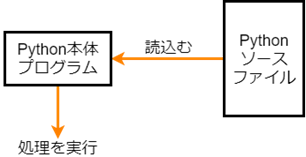

1. Python を始めよう
1.1. Python をインストールしよう
Python はインタプリタ型言語というタイプのプログラミング言語で、テキスト形式のスクリプトファイルを Python 実行用の本体プログラムに読込ませることで処理を実行できます。
Python はバージョン 2 系と 3 系があり、一部文法が異なるなど完全な互換性はありません。
2 系で作成したプログラムが3系では正しく動かないという問題があるため、2 系が現役で使用されている現場もあるようですが、2020 年 4 月にリリースされたバージョン 2.7.18 を最後に 2 系のサポートは終了しています。
Mac には Python 2 系がプリインストールされていますが、上記の理由もあるので 3 系をインストールしましょう。
まずは Python の本体プログラムを公式サイトからダウンロードしましょう。
Windows、Mac、Linux 等使用している PC に合わせたものを下記からインストールします。
https://www.python.org/downloads/
特に理由がなければ最新のバージョンをインストールしましょう。
2022 年 5 月時点では 3.10.4 が最新です。
1.2. コマンドプロンプト (またはターミナル) の使い方
Python の実行はいくつか方法があるのですが、コマンドプロンプトやターミナルから実行するのが基本です。
コマンドプロンプト等を用いて Python の本体プログラムにスクリプトファイルを渡すことで処理が実行されます。
1.2.1. Windows の場合
スタートメニューからコマンドプロンプトを探して起動
または、[ Windows キー ] + [ r ]を押して表示されたウィンドウに[ cmd ]と入力
コマンドプロンプトやターミナルを起動するとディレクトリが表示されます。
これは現在参照している階層( カレントディレクトリ )を示します。
なお、初期表示のディレクトリは設定によって異なります。
コマンドだけで操作するインタフェイスを CLI とか CUI といいます。
まずは、Python が正常にインストールされているか確認してみましょう。
Python がインストールされているか確認する方法として、下記の Python のバージョンを表示するコマンドが正常に実行できるかを確認します。
python -V
(mac の場合)
python3 -V
上記コマンドがエラーになった場合、Python がインストールされていないか、 環境変数 が正しく設定されていない可能性があります。
Python に限らず、プログラミングを行う上では CLI を使用する機会は多くなりますので慣れるためにも下記のような演習用ディレクトリをコマンドで作成してみましょう。
C:\Users\(ユーザ名)\Documents\Python_hiyoko\lesson1
ディレクトリの作成は mkdir コマンド を使用します。
以下に一例を示します。
まず、初期表示のディレクトリが C:Users(ユーザ名) でなく C:Spam だった場合を考えます。
cd コマンド でディレクトリを移動しましょう。
C:\Spam> cd C:\Users\(ユーザ名)
C:\Users\(ユーザ名)> ←参照しているディレクトリが切り替わった
次に dir コマンド を実行すると C:Users(ユーザ名) の中身が確認できます。
その中にはきっと Documents というディレクトリがあるはずです。
cd コマンドで移動しましょう。
C:\Users\(ユーザ名)> cd Documents
C:\Users\(ユーザ名)\Documents>
コマンドプロンプトには入力補完機能があります。
例えば Documents というディレクトリに移動したいときに、d と入力したあと [Tab キー] を押すと頭に d の付くディレクトリの候補が順に表示されます。
一旦 C:Users(ユーザ名) まで戻って入力補完を試してみましょう。
ひとつ前のディレクトリに戻るには cd .. とします。
C:\Users\(ユーザ名)\Documents> cd ..
C:\Users\(ユーザ名)> cd d
C:\Users\(ユーザ名)> cd Desktop
C:\Users\(ユーザ名)> cd Documents
C:\Users\(ユーザ名)\Documents>
それでは演習用ディレクトリを作って移動してみましょう。
ここからはカレントディレクトリの表示を省略します。
> mkdir Python_hiyoko\lesson1
> cd Python_hiyoko\lesson1
上記のように、ディレクトリの移動も作成も一つずつだけではなく複数指定することもできます。
ここで作成したディレクトリに Python のスクリプトファイルを作成して演習を行います。
1.3. 開発環境の選び方
Python のスクリプトファイルは拡張子が .py のテキストファイルです。
メモ帳でも作成できますが、より便利な テキストエディタ や 統合開発環境 等を使ってみましょう。
Microsoft 製のコードエディタ Visual Studio Code (VSCode) がおすすめです。
色々試してみて自分に合った環境を選ぶといいでしょう。
1.4. Python でプログラムを実行してみよう
Python の実行は「スクリプトファイルを読み込む方法」と「対話モード」というものがあります。
対話モードは主にコードの確認用に使用します。
まずは、対話モードでプログラミングの基本「HelloWorld」を表示してみましょう。
対話モードを開始するにはコマンドプロンプトに python または py と入力すれば実行できます。
Mac の場合は (特に設定していなければ) python3 コマンドで実行できます。
> python
画面に文字を表示するには print 関数 を使います。
以下のコマンドを実行してみましょう。
>>> print("HelloWorld") ← 「HelloWorld」と表示させるコマンド
HelloWorld ← コマンドの結果
>>>
これだけです。
対話モードを終了するには exit() または quit() と入力します。
次にスクリプトファイルを作成して実行してみましょう。
まず、テキストエディタ等で下記を入力して作成した演習用ディレクトリ内に hello_world.py という名前で保存します。
また、保存する際に文字コードを utf-8 に設定しましょう。 (エディタによって設定方法が異なるので各自使用しているエディタのドキュメント等で確認してください)
hello_world.py
print("HelloWorld") # HelloWorld と表示する
CLI 画面から Python の本体プログラムに作成したスクリプトファイルを渡します。
python(またはpython3) の後ろに半角スペース、スクリプトファイル名と指定すると実行できます。
> python hello_world.py ← Python に hello_world.py を読み込ませる
HelloWorld ← プログラムの結果
スクリプトファイルの指定には tab キー補完が便利なのでぜひ活用しましょう。
1.4.1. コメント文
# を使うと行のそれ以降が コメント文 になります。
コメント文はプログラムに影響しないので処理の内容を説明したりするときに便利です。
' (シングルクォート) または " (ダブルクォート) 3 つで囲うと その範囲がすべてコメントになります。
# コメント
print("jobcrown") # コメント
# print("python")
"""
print("jobcrown")
print("python")
"""
1.5. 変数
変数とは、データの入れ物のことでプログラミングの基本となる概念です。
Python では変数の定義は下記のようにします。
変数名 = データ
(例)
num = 100 # ← 変数 num に数値 100 を代入しています。
変数名には命名ルールがあります。
使用できる文字はアルファベット小文字の a から z、大文字の A から Z、数字の 0 から 9、_ (アンダースコア)。また、日本語文字 (Unicode 文字) も使用できますが推奨されていません。
数字を先頭に使うことはできない。
予約語 は使用できない。
予約語以外でも関数等と同名にすると上書きされて正しく機能しなくなるので非推奨。
予約語とは
制御構文などに使用する名前を予約語といいます。
もし変数名に予約語が使用できてしまうと変数名と予約語の区別がつかなくなり正しい処理ができなくなってしまうので、使用が禁止されています。
Python の予約語は以下の通りです。
False, await, else, import, pass, None, break, except, in,
raise, True, class, finally, is, return, and, continue, for,
lambda, try, as, def, from, nonlocal, while, assert, del,
global, not, with, async, elif, if, or, yield
前節で作成した hello_world.py を修正してよりプログラミングっぽく書いてみましょう。
hello_world.py
text = "HelloWorld" # 変数 text に文字列 "HelloWorld" を代入
print(text)
print 関数は () の中に指定した文字列を画面に表示する関数です。
この例では変数textを指定しているので、その中のデータ文字列 "HelloWorld" を画面に表示します。
1.6. データ型
Python を含めプログラミング言語では、扱うデータによって 型 が異なります。
データの種類によって入れ物が異なるようなイメージです。
下記は基本的なデータ型です。
int |
整数型 |
小数点を含まない数値 |
float |
浮動小数点数型 |
小数点を含む数値 |
str |
文字列型 |
文字データ |
bool |
真偽型 |
真 (True) または偽 (False) |
1.6.1. 各データ型の定義方法
int
小数点を含まない数値で定義
int_data = 10
float
小数点を含む数値で定義
float_data = 3.14
str
' (シングルクォート)または " (ダブルクォート)で囲んで定義
str_data1 = "文字"
str_data2 = "300"
bool
True または False で定義 (先頭のみ大文字、クォートで囲まない)
bool_data = True
異なるデータ型同士の演算ではエラーになることがあります。
1 + "1" # エラー (整数と文字列の加算はできない)
1 + True # 2 (bool 値の True は数値の 1、False は 0 と扱われる)
"あ" * 5 # あああああ (文字列を整数で掛けると、その数だけ繰り返す)
"あ" * 3.14 # エラー (文字列と浮動小数点数の乗算はできない)
データの型を調べるには type 関数を使用します。
>>> int_data = 100
>>> print(type(int_data))
<class 'int'>
1.6.2. データ型の変換
各データ型の要件を満たす場合、他のデータ型から変換できます。
int に変換
int(3.14) # 3 (浮動小数点数を整数に変換(小数点以下切り捨て))
int("20") # 20 (半角文字列の数値を整数に変換)
int("１００") # 100 (全角文字列の数値を整数に変換)
int("数値") # エラー (数値以外の文字列は変換できない)
int(True) # 1 (bool値の True (文字列ではない) は 1 になる)
int(False) # 0 (bool値の False (文字列ではない) は 0 になる)
float に変換
float(50) # 50.0 (整数を浮動小数点数に変換)
float("3.14") # 3.14 (半角文字列の数値を浮動小数点数に変換)
float("数値") # エラー (数値以外の文字列は変換できない)
float(True) # 1.0 (bool 値の True (文字列ではない) は 1.0 になる)
float(False) # 0.0 (bool 値の False (文字列ではない) は 0.0 になる)
str に変換
str(-10) # "-10" (整数を文字列に変換)
str(3.14) # "3.14" (浮動小数点数を文字列に変換)
str(True) # "True" (bool 値の True を文字列に変換 ("1" とはならない))
str(False) # "False" (bool値の False を文字列に変換 ("0" とはならない))
bool に変換
bool(8) # True (0 以外の整数は True になる)
bool(-50) # True (0 以外の整数は True になる)
bool(0) # False (0 の整数は False になる)
bool(3.14) # True (0.0 以外の浮動小数点数は True になる)
bool(0.0) # False (0.0 の浮動小数点数は False になる)
bool("text") # True (空白以外の文字列は True になる)
bool(" ") # True (空白以外の文字列は True になる(スペースも文字列))
bool("") # False (空白の文字列は False になる)
1.6.3. 演習問題
演習用ディレクトリに data_type.py というファイルを作成して、次のようなプログラムを作ってみましょう。
(A) 変数 data に代入した bool 型のデータ True を 文字列の "1" に変換する。
data_type.py
data = True
str_data = (A) # data を文字列の "1" に変換
print(str_data)
print(type(str_data))
1.7. 演算子
プログラムはデータ同士の演算によって成り立ちます。
1.7.1. 代数演算子
四則計算など、数値の計算に使用します。
A + B # 加算
A - B # 減算
A * B # 乗算
A / B # 除算
A % B # 剰余
A ** B # 累乗
A // B # 切り捨て除算
1.7.2. 代入演算子
変数にデータを代入するときに使用します。
A = B # A に B を代入
A += B # A に B を加算して代入
A -= B # A から B を減算して代入
A *= B # A に B を乗算して代入
A /= B # A を B で除算して代入
A %= B # A を B で剰余して代入
A **= B # A を B で累乗して代入
A //= B # A を B で切り捨て除算して代入
1.7.3. 比較演算子
データを比較して真なら True、偽なら False になります。
A == B # A と B が等価なら True
A != B # A と B が等価でなければ True
A > B # A が B より大きければ True
A >= B # A が B 以上なら True
A < B # A が B より小さければ True
A <= B # A が B 以下なら True
A in B # A が B に含まれるなら True
ブール演算子
ブール値の組合せによって True、または False になります。
A and B # A と B が両方 True なら True、どちらかが False なら False
A or B # A と B のどちらかが True なら True、両方 False なら False
not A # A が False なら True、True なら False
1.7.4. 文字列演算子
文字列の操作に使用します。
A + B # 文字列 A と文字列 B を結合
A * B # 文字列 A を B (int 型) 回繰り返す
1.8. 制御構文
より高度な処理を行うためには 制御構文 を使います。
条件に応じて処理を分岐させたり、同じ処理を繰り返し実行したりすることができます。
構文の構造は下記のようになっています。
構文A:
処理1
構文の中の処理にはスペースやタブ (推奨はスペース4つ) を使って インデント を付ける必要があります。
同じ構文の処理のインデントは揃える必要があります。
また、構文内に別の構文を入れることもできます。この状態を ネスト といったりします。
その場合はさらにインデントを付ける必要があります。
この説明だとよくわからないと思いますので、下記に例を示します。
処理1 # 構文外の処理
構文A:
処理2 # 構文Aの処理
処理3 # 構文Aの処理
構文B: # 構文Aの処理
処理4 # 構文Bの処理
処理5 # 構文Aの処理
処理6 # 構文外の処理
なんとなくイメージできるでしょうか。
1.8.1. if 文
条件分岐を行う構文です。
条件式が True のとき処理を実行します。
if A == B: # : (コロン)を忘れないこと
print("A is B") # 構文内の処理はインデントをつける。
また、条件式が False となったときの処理は else で指定できます。
if A == B: # : (コロン)を忘れないこと
print("A is B") # 構文内の処理はインデントをつける。
else: # else には条件式を指定できない
print("A is not B")
一つ目の条件式で False になった後、elif でさらに条件式を追加できます。
if A > B:
print("A is larger than B")
elif A == B:
print("A is B")
else:
print("A is smaller than B")
条件文に bool 値以外のデータを入れると、自動的に bool 値に変換して評価されます。
たとえば str 型のデータを入れると空値以外は True として扱われます。
→ str 型のデータが空かどうかを判定できる。
text = "" # 空の str 型データ
if text:
print(text)
else:
print("変数 text は空のデータです")
1.8.2. for 文
特定の回数繰り返し処理を行なう構文です。
ここでは一番基本的な使い方のみ紹介します。
for i in range(10):
print(str(i+1).zfill(2) + ": " + "ジョブクラウン") # 文字列 "ジョブクラウン" を 10 回表示
なお、for の後の i は繰り返し回数を格納する変数で カウンタ変数 と言ったりします。
i である必要はありません。
また、カウンタ変数のデータを使用しない場合は _ (アンダースコア) を使用することが慣例です。
for _ in range(10):
print("ジョブクラウン")
1.8.3. while 文
条件が満たされている間繰り返し処理を行なう構文です。
while 文では条件式が True のままだと永久に繰り返し処理を行ってしまうので注意しましょう。
while A > B:
print("A is larger than B")
B += 1 # B に 1 ずつ加算していき A より大きくなったら終了する
1.8.4. try 文
エラーが発生した際に、そのエラーの種類によって実行する処理を分けたりすることができる構文です。
try:
print(text)
except NameError:
print("未定義の変数です")
except Exception:
print("その他のエラーが発生しました")
else:
print("エラーは発生しませんでした")
finally:
print("おわり")
1.8.5. break
特定の条件のとき構文を抜けたい場合は break を使用します。
for i in range(10):
if i == 5: # 変数 i が 5 になると構文を抜ける。
break
print(i)
1.8.6. continue
特定の条件のときその処理をスキップしたい場合は continue を使用します。
for i in range(10):
if i == 5: # 変数 i が 5 のとき処理をスキップ。
continue
print(i)
1.8.7. pass
構文には処理を指定しないとエラーになってしまいますが、場合によっては何もしない処理が必要になることがあります。
その場合は pass を使用します。
if A == B:
pass # 何もしない
else:
print("A is not B")
1.8.8. ネストについて
前述のとおり、構文の中に複数の構文が内包されている状態をネストと表現しますが、言葉だけだとイメージしにくいと思いますので以下に使用例を示します。
for i in range(100): # 構文A
for j in range(100): # 構文B (構文A にネストされている)
print(str(i).zfill(2)+": "+str(j).zfill(2))
num = 100
if num >= 50: # 構文A
num *= 5
if num <= 3000: # 構文B (構文A にネストされている)
print(num)
1.9. 演習問題
各問題ごとに演習用ディレクトリにファイルを作成し、プログラムを作成しましょう。
1.9.1. 演習1.
ファイル名: practice1.py
input 関数を使用してユーザが画面から入力した文字を表示する。
(実行例)
何か入力してください： Hello
Hello と入力されました
(ヒント) input 関数は下記のように使用します。
input_data = input("入力してください") # 入力されるまで待機します
print(input_data)
1.9.2. 演習2.
ファイル名: practice2.py
ユーザが入力した文字が「Hello」の場合「こんにちは」と返答し、それ以外の場合は「わかりません」と返答する。
(実行例)
何か入力してください： Hello
こんにちは
1.9.3. 演習3.
ファイル名: practice3.py
ユーザが入力した文字が変数 password に定義した文字列と等しければ「パスワードを認証しました」と表示し、そうでなければ「パスワードが違います」と表示する。
(実行例)
パスワードを入力してください： password
パスワードが違います
1.9.4. 演習4.
ファイル名: practice4.py
ユーザが入力した文字が変数 password に定義した文字列と等しければ「パスワードを認証しました」
と表示し、そうでなければ「パスワードが違います」と表示し、正しいパスワードを入力するまで再入力させる。
(実行例)
パスワードを入力してください： password
パスワードが違います
パスワードを入力してください： abcd
パスワードが違います
パスワードを入力してください： jobcrown
パスワードを認証しました
1.9.5. 演習5.
ファイル名: practice5.py
ユーザが入力した文字が数値型に変換可能な場合、int 型に変換した値を変数 value に代入し、変数 value が 1 から 100 の範囲内ならその回数分「JOBCROWN」という文字を表示する。
また、ユーザが入力した文字が数値型に変換可能でない場合「数値で入力してください」と表示し、1 から 100 の範囲外の数値の場合「1から100までの範囲で入力してください」と表示し再入力させる。
(実行例)
好きな数字を入力してください： 数字
数値で入力してください
好きな数字を入力してください： -10
1から100までの範囲で入力してください
好きな数字を入力してください： 5
JOBCROWN
JOBCROWN
JOBCROWN
JOBCROWN
JOBCROWN
(ヒント1) input 関数が返すデータ型は文字列型です。
(ヒント2) 文字列が int 型に変換可能か確認するには isdecimal メソッドを使用します。
str1 = "123"
str2 = "１２３" # 全角数字
str3 = "あああ"
print(str1.isdecimal()) # True
print(str2.isdecimal()) # True
print(str3.isdecimal()) # False